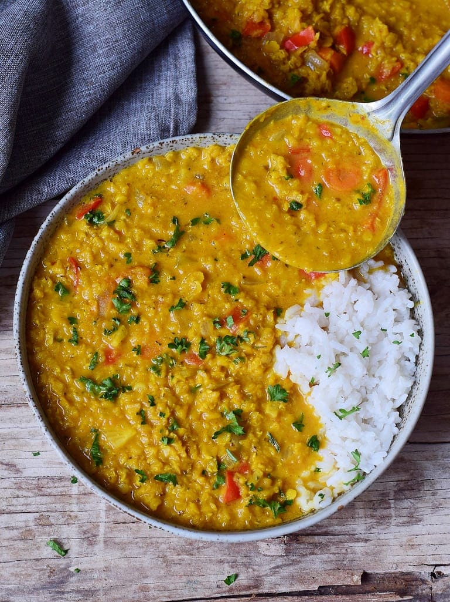

Lentil Dahl Recipe

Lentil Dahl is an indian lentil dish. I don't know anything
much about it. I had a friend from Dehli once who told
me he would have it every day for lunch back home. He woudln't eat
mine. But I think that's because of the time i cooked the worst
mushroom dish ever for him.
anyway what I can say about lentil dahl is that it's absolutely
delicious and healthy too!
Ingredients
- 1 cup red lentils
- 2 tbsp ginger root, minced
- 1 tsp mustard seed
- 2 tbsp chopped cilantro
- 4 tomatoes chopped
- 3 onions chopped
- 3 jalapeno peppers, minced
- 1 tbsp cumin
- 1 tbsp coriander
- 6 garlic cloves, minced
- 2 tbsp coconut oil
- 1 cup water
- Salt
Steps
- Cook the lentils by boiling or pressure cooking until lentils are soft. (Pressure cooking is faster.)
- In a skillet heat the oil and add mustard seeds. When mustard seeds begin to flutter, add onions, ginger, jalapeno peppers, and garlic. Saute until the onions and garlic are golden brown. Add coriander and cumin. Add chopped tomatoes. Saute the mixture well until tomatoes are well cooked.
- Add water. Boil 6 minutes. Add cooked lentils, stirring well. Add salt to taste, stirring well. Add finely chopped cilantro and remove from heat. Serve hot.